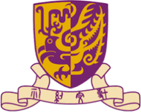

Lab PI
Hongliang Ren
Principal investigator, REN Lab — Intelligent Medical Mechatronics, Department of Electronic Engineering, The Chinese University of Hong Kong. Corresponding author on all three projects below.